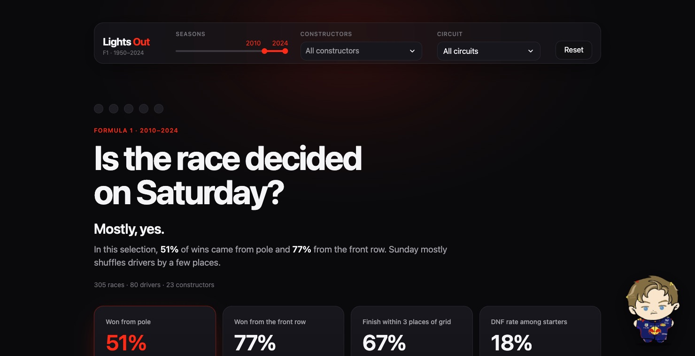

Sector 1Q1
How much does the starting grid decide the result?
Expect: a strong link that has grown stronger since 2010.
F1 World Championship · 1950–2024
Dataset overview
race results. One row for every driver in every Formula 1 race since 1950.
Source: Kaggle · Formula 1 World Championship (1950–2020), Rohan Rao · Ergast data, updated to 2024
Problem definition
Expect: a strong link that has grown stronger since 2010.
S1Expect: clear dynasties rather than an open fight.
S2Expect: far fewer mechanical retirements today.
S3EDA · Sector 1 · Grid vs result
Share of starts that ended on the podium, by grid slot, 2010–2024. Red marks the first three slots.
correlation between grid slot and finishing position
races won from outside the top ten
EDA · Sector 1 · Where each grid slot finishes
of pole sitters who finished went on to win
of finishers ended within three places of their grid slot
of finishers starting 11th or lower made the podium
EDA · Sector 3 · Reliability
DNF rate among starters, 1950s to 2020s
Starters only: did-not-qualify, withdrawn and excluded entries removed · 2020s = 2020–2024
EDA · Sector 2 · Constructor dominance
Share of race wins taken by the most successful constructor in each period · 1950–2024
Dashboard demo · Streamlit

1 2 3Box, box. Going to live demo.
Final insights
Retirements fell from one in two starters to one in seven.
51% of races since 2010 were won from pole, 77% from the front row.
Mercedes won 102 of 138 races from 2014 to 2020.
Conclusion · Chequered flag
Since 2010, 51% of races were won from pole and 77% from the front row. Sunday mostly moves drivers by a few places.